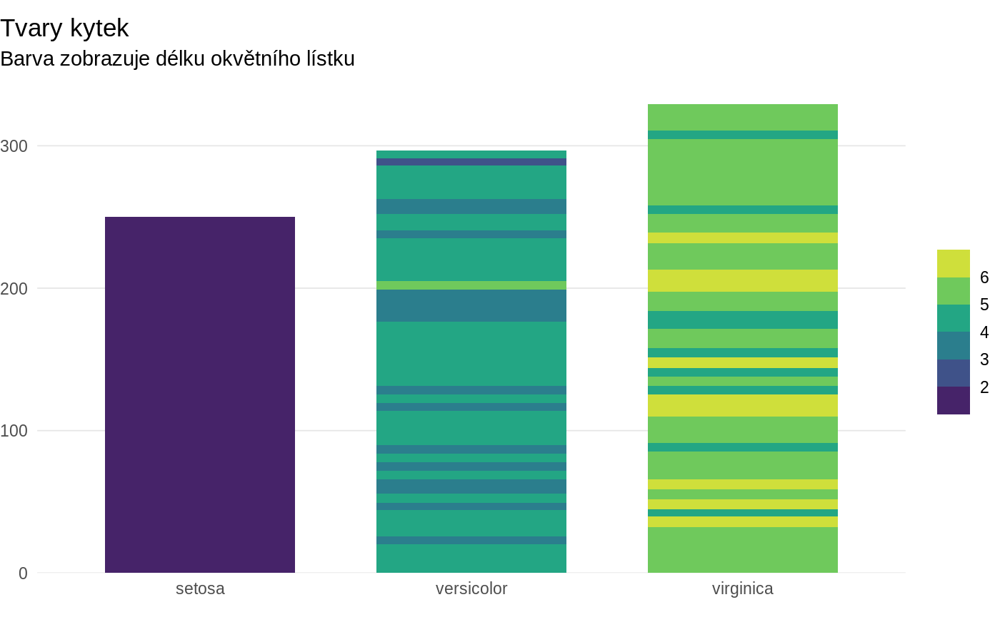

just a brief test of theme_schola()
ggplot(iris, aes(Species, Sepal.Length)) +
geom_col(aes(fill = Petal.Length), width = 0.7) +
scale_y_continuous(expand = flush_axis) +
# scale_x_discrete(expand = flush_axis) +
theme_schola(legend.title = element_blank(), side_margin = 0) +
labs(title = "Tvary kytek", subtitle = "Barva zobrazuje délku okvětního lístku") +
scale_fill_viridis_b()